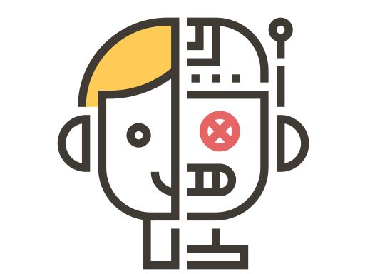

<ion-header>
  <ion-toolbar>
    <ion-buttons slot="start">
      <ion-back-button></ion-back-button>
    </ion-buttons>
    <ion-title>Ayudas</ion-title>
  </ion-toolbar>
</ion-header>

<ion-content padding>

  <ion-card class="card-content1">
    <div style="text-align: center;">
      
    </div>
    <ion-card-content class="button-content">
      <ion-button shape="round" slot="end" href="https://drive.google.com/file/d/1rJxFIXSSlS_WBrn0ai_4rRvMSkHQmcKI">
        Interacción con infinity
        <ion-icon name="bookmarks-outline"></ion-icon>
      </ion-button>
    </ion-card-content>
  </ion-card>

</ion-content>